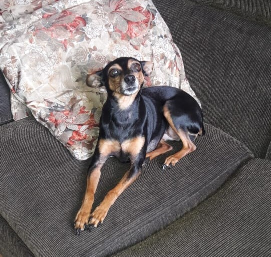

___________________________________________________
Olá, meu nome é Gustavo, tenho 15 anos, nasci no dia 12 de outubro de 2004 em Nova Lima. Nasci com apenas seis meses de gestação, o que me fez sair do hospital um mês após meu nascimento. Tenho 1,65 cm de altura.
Gosto muito de cozinhar, escutar música, assistir a filmes e séries, amo animais (inclusive tenho uma pinscher, o que ela não tem de estatura, tem de atrevida), olha ela:

Sou uma pessoa muito indecisa, tenho muitos sonhos, mas não me decido qual merece maior determinação. Penso em me formar, porém gosto de várias áreas, estou amando o curso técnico que estou cursanso, mas não sei se quero aprofundar nessa área (dilema interminável).
___________________________________________________
Este site é um pequeno trabalho do curso de Informática, matéria: Laboraório de Programação para Web (melhor matéria de inf).